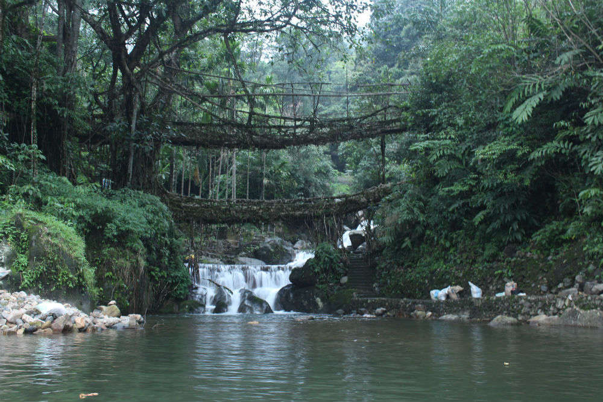

Meghalaya
"The Abode of Clouds"
Quick Facts
Popular Tourist Attractions
Cherrapunji
One of the wettest places on Earth, known for waterfalls and lush valleys.
Living Root Bridges
Ingenious natural wonders formed by intertwining roots over decades.
Umiam Lake
A scenic man-made reservoir, perfect for boating and views.
Nature & Wildlife
Meghalaya hosts dense forests, sacred groves, and rich biodiversity, including the rare Clouded Leopard and Hoolock Gibbons.
Famous Personalities
- Ryndia Rani: Known for preserving Khasi weaving traditions.
- Conrad Sangma: Influential politician and CM of Meghalaya.
- Patricia Mukhim: Renowned journalist and editor of The Shillong Times.
Local Handicrafts
Known for bamboo crafts, hand-woven textiles, cane furniture, and traditional Khasi jewelry.
Climate
Cool, subtropical highland climate with extremely high rainfall especially in Cherrapunji and Mawsynram.
Culture & Festivals
Festivals
Festivals like Shad Suk Mynsiem and Wangala celebrate harvests and local traditions.
Dance & Music
Traditional Khasi and Garo dances performed during cultural events and festivals.
Cuisine
Popular dishes include Jadoh, Dohneiiong, Nakham Bitchi, and bamboo shoot specialties.
Clothing
Women wear Jainsem or Dakmanda, and men wear turbans and cotton wraps.
Did You Know? Mawsynram in Meghalaya holds the record for the highest average annual rainfall in the world!
Note: Information may be subject to updates. Kindly notify us of any discrepancies.